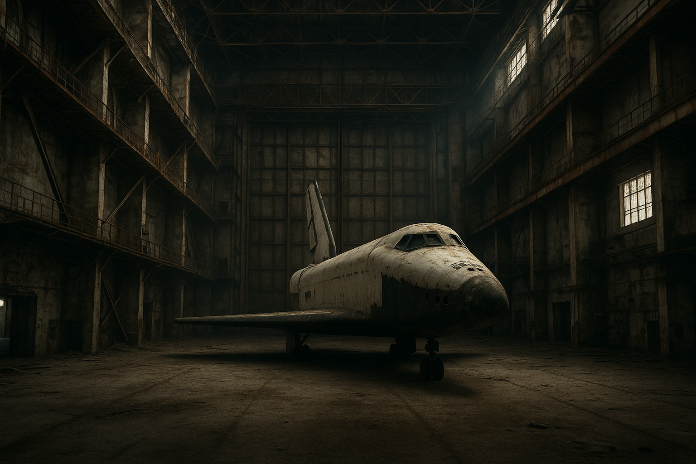

The Soviet Space Shuttle That Flew Once and Died in a Hangar
In 1988, the Soviet Union built a space shuttle that looked almost exactly like the American one — and then did something the Americans never managed: it flew itself into orbit and landed without a single human on board. Two orbits of Earth. Autonomously. On November 15, 1988.
Then the Soviet Union collapsed, the program was abandoned, the hangars were left to rot in Kazakhstan, and in 2002, the roof of one hangar collapsed and crushed the shuttle. That was that.
The story of Buran is one of the most remarkable chapters of the Cold War space race — and it involves espionage, a perfect copy, a technical innovation the US never achieved, and a ending that's equal parts tragic and absurd.
The headline fact: Buran's only flight was the first (and remains one of the only) fully autonomous shuttle flights ever. No crew. The orbiter launched, orbited Earth twice, and landed entirely under automated control — with wind shear of up to 20 m/s at the landing site. The Soviet system did something NASA never attempted.
The Buran didn't just look like the American Space Shuttle — it was designed using stolen American plans. The CIA's 1985 analysis "Soviet Acquisition of Militarily Significant Western Technology" described the Shuttle project as one of the KGB's greatest exploits. Soviet intelligence agencies (the VPK and KGB) accessed NASA's shuttle design documents, including airframe specifications, material data, flight computer systems, and propulsion engineering. Much of this material was hosted on commercial databases — making the Shuttle heist one of the earliest cases of digital espionage.
The documents the Soviets acquired covered: computer programs for design analysis, material specifications, airframe designs, and flight computer systems. This information, the CIA concluded, "allowed Soviet military industries to save years of scientific research and testing time as well as millions of rubles."
The counter-espionage twist: When American agencies discovered the theft, the CIA allegedly began feeding flawed designs — NASA rejects — to Soviet spies, disguised as "improvements." The idea was to let the Soviets build on bad data. How much of this influenced Buran is debated, but the espionage timeline is documented.
From the outside, Buran looked virtually identical to the US Shuttle: delta wings, T-shaped tail, heat shield tiles, payload bay. But the underlying system was fundamentally different in several critical ways:
This is the single most important design difference. The US Space Shuttle had three Space Shuttle Main Engines (SSMEs) attached to the orbiter, which fired during launch from the external tank. The Buran orbiter had no main engines. All thrust came from the Energia launch vehicle. This meant the Buran orbiter was lighter and simpler — but it also meant the Energia rocket had to do all the work.
The US Shuttle used two Solid Rocket Boosters (SRBs) made from segmented sections joined by O-rings — the same O-rings that caused the Challenger disaster in 1986. Buran's companion Energia rocket used four liquid-fueled boosters (kerosene/oxygen with RD-170 engines, each with four nozzles). No O-rings. No segments. Potentially more reliable. The Russians specifically cited the Challenger explosion as proof their approach was superior.
Perhaps the most technically impressive difference. The Buran was designed from the start to fly autonomously — it had an onboard automated landing system that could land the shuttle without a human pilot. On its one flight, it did exactly that. The US Shuttle was designed with human pilots and only added autopilot landing capabilities much later. Buran's autonomous capability also meant the Soviets could conduct uncrewed missions — useful for delivering military payloads.
Energia could lift approximately 100,000 kg to low Earth orbit — slightly more than the US Saturn V, the most powerful rocket ever built by NASA. The system was genuinely powerful, not just a copy.
The Buran program was approved in 1976, under Leonid Brezhnev, as a direct response to the US Space Shuttle program. The Soviets saw the Shuttle as a potential military threat — a vehicle that could launch, deploy satellites or weapons, and return to Earth, potentially being reused rapidly. If the US had that capability, the Soviets needed it too.
But unlike the US program, which had clear scientific, military, and commercial missions, the Buran program's role within the Soviet space industry was never entirely clear. Existing missions — like maintaining the Mir space station — were already handled by Soyuz rockets. The Soviets couldn't articulate exactly why they needed Buran beyond matching the Americans.
The program cost billions of rubles. The Energia rocket had its first launch in 1987 with an experimental military platform called Polyus as payload. Then came the single Buran flight in 1988.
Before Buran flew in space, the Soviets built an atmospheric test vehicle called OK-GLI — a Buran orbiter fitted with four jet engines for atmospheric flight testing. Between November 1985 and April 1988, OK-GLI made 24 atmospheric test flights from Baikonur, with a crew of two on board. Fifteen of those flights landed using the automatic mode, proving the autonomous system worked in the atmosphere before it went to space.
Then came November 15, 1988. Buran (orbiter 1K) launched at 03:00 UTC from Baikonur, atop an Energia rocket. No crew. The orbiter completed two orbits of Earth — about 3.5 hours — then re-entered the atmosphere and landed at Baikonur under full autonomous control, with wind shear of up to 20 m/s at the landing site. Everything worked. The Soviets had demonstrated they could do what America couldn't.
The original mission plan called for cosmonauts to fly on subsequent missions. There were plans for crewed flights, space station construction, and military missions. None happened.
By the late 1980s, the Soviet economy was in crisis. The Buran program's cost — estimated at billions of rubles — was unsustainable. Funding trickled to a halt and was officially ended in 1993. After the Soviet Union collapsed in 1991, the Baikonur Cosmodrome ended up in newly independent Kazakhstan. The orbiters — including a second one that was 97% complete — were left in their hangars.
On May 12, 2002, during a massive storm in Kazakhstan, the roof of the MIK hangar collapsed. The two Buran orbiters — the one that flew and the one that almost flew — were crushed under tons of debris. Eight workers were killed.
The remains still sit in the ruins. RKK Energia, the company that built the orbiters, sold them to a Kazakh company called Infrakos in 2004, which in turn sold them to a Russian-Kazakh company. What remained was essentially space junk.
The cruel irony: The Buran orbiter that flew to space and back — the first autonomous shuttle flight in history — was later crushed to death by a poorly maintained roof. The technical achievement was extraordinary. The ending was mundane.
The atmospheric test vehicle OK-GLI had a different fate than the other Buran orbiters. After the Soviet collapse, it was moved to the Speyer Technik Museum in Germany, where it sits today as a museum exhibit. Tourists can walk up to it and see what the Soviet shuttle looked like up close. The jet engines that were fitted for atmospheric testing still hang from its sides — a reminder that this wasn't a spaceship, but a test bed for one.
Buran is a story about how great engineering can still fail. The Soviets built a machine that flew to space and back without a pilot — a feat the US didn't replicate with the Shuttle until decades later. But they built it without a clear mission, funded by a dying empire, and when the empire fell, the machine was left to rust in a foreign country and then crushed by its own roof.
It's also a story about the cost of mimicry. The Soviets copied the American Shuttle because they were afraid of falling behind. But copying a vehicle doesn't mean copying its purpose. The Shuttle had missions — deploying satellites, servicing the Hubble telescope, building the ISS. Buran had none of these. The Soviets built a solution to a problem they didn't fully have, and the bill came due before they figured out what to do with it.
There's something poignant about it — a machine that went to space, came back perfectly, and then sat in a hangar until the roof caved in. The technical achievement was real. The ending was just sad.